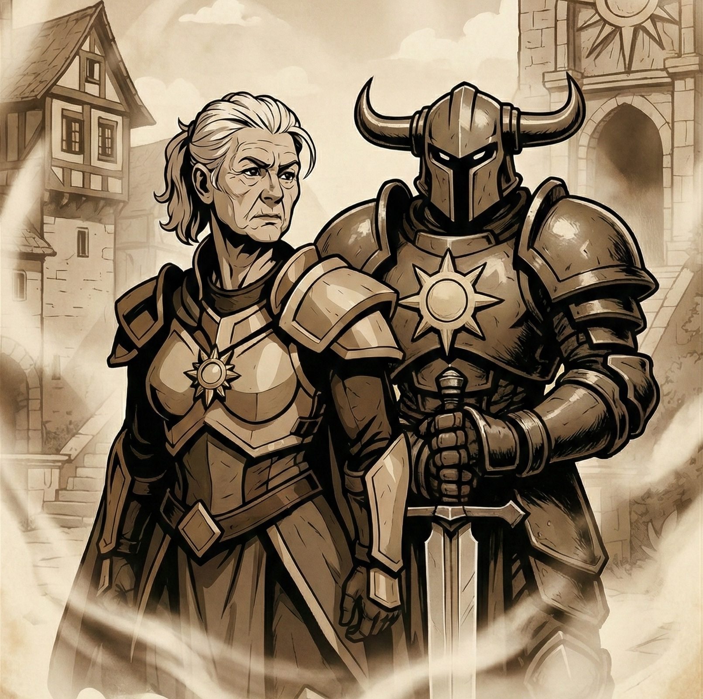
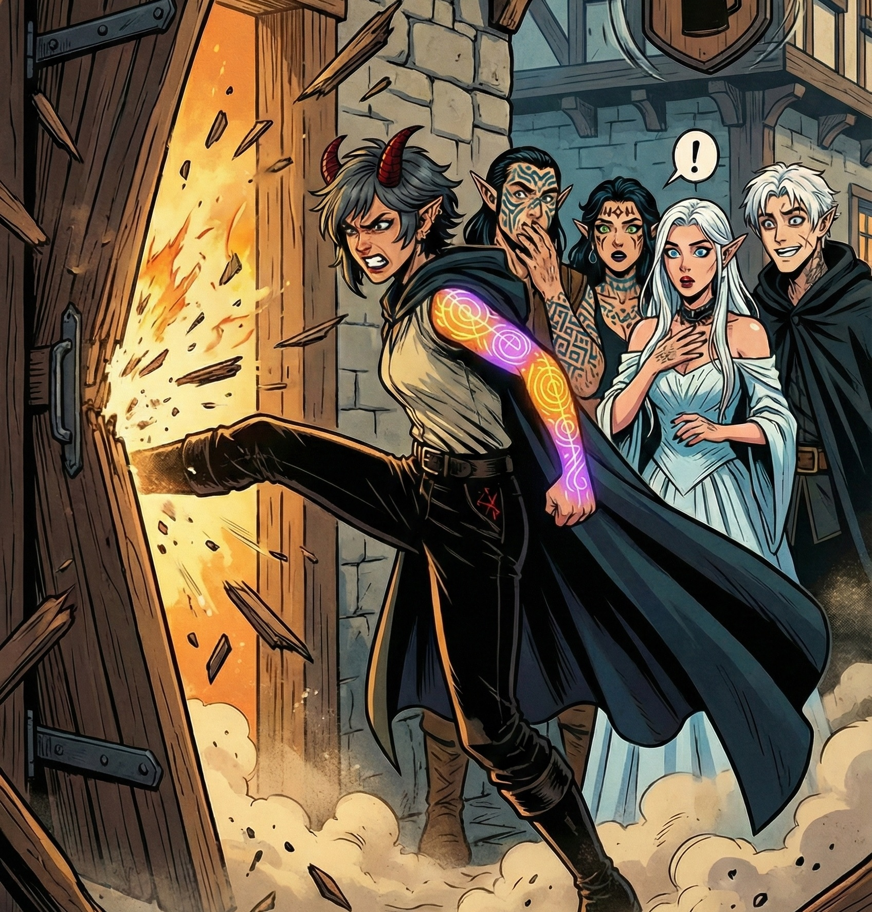
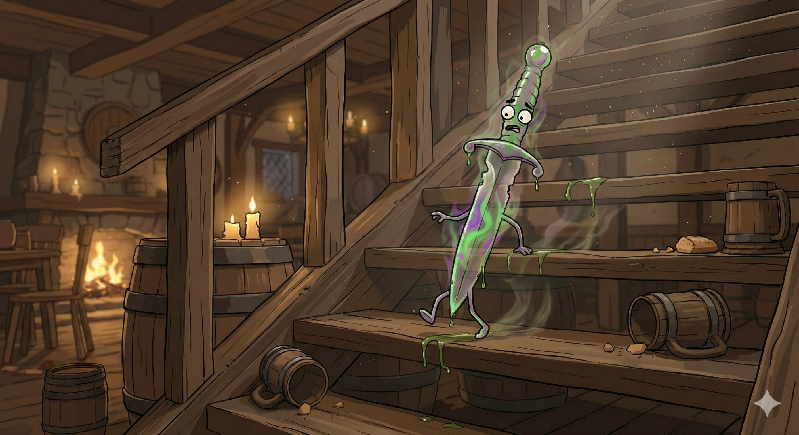
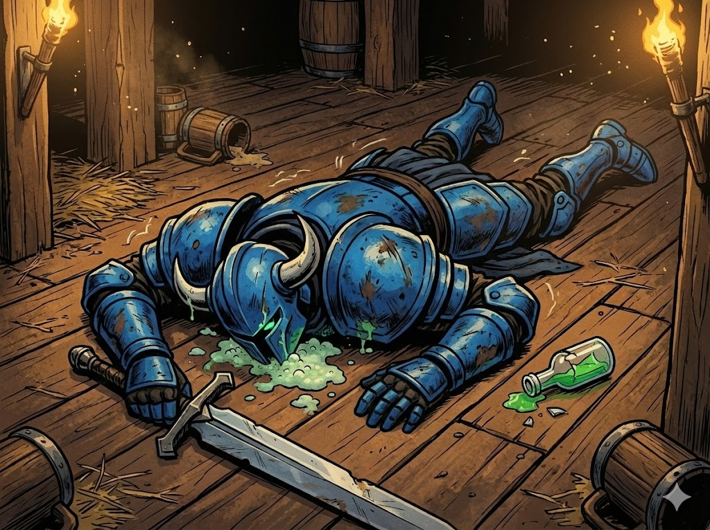
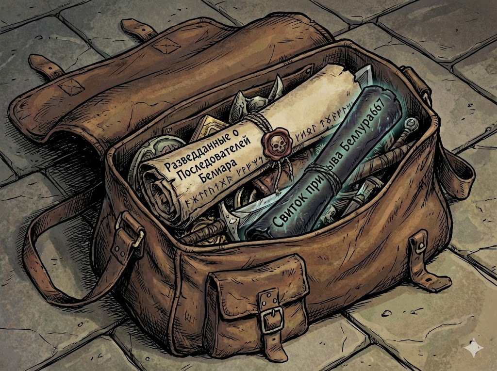
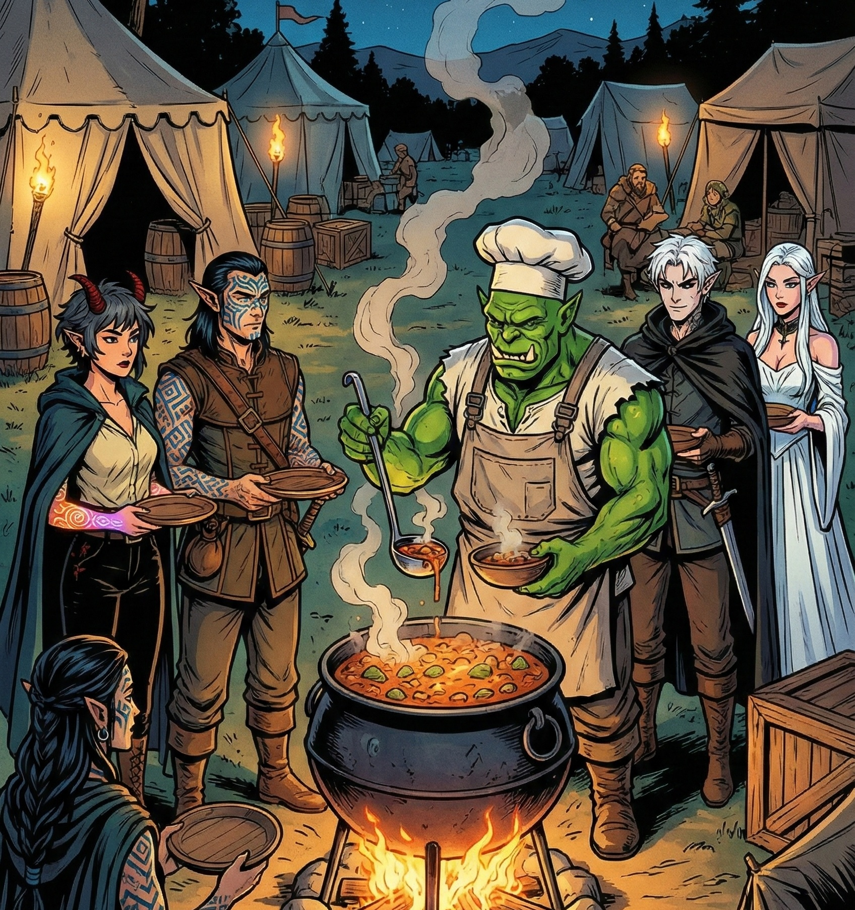

Культ Хаоса - игра 1
Возрождение Хаоса
Когда пламя старой власти угасло, и главари культа Хаоса исчезли на тайной миссии, остались лишь мы — младшие, забытые, скрывающиеся в таверне. В роллинге иерархии именно Эйра стала новой главой заведения. Старая бухгалтерия — заплесневевшие бумаги и исписанные страницы — хранила страшные тайны и следы ушедшего правления.

Но внезапно , весть о гибели наших лидеров пришла, как удар грома. Орден Порядка объявил культ Хаоса вне закона. Город был прочёсан: они искали нас. Мы знали — долго не продержимся в тени. Нужно было действовать.
Мы спустились в подземелья под таверной. Лабиринт вёл к древнему святилищу, открывавшемуся только командной работой. Последняя дверь признала Ноктюрн — ей досталось письмо от отца и сердце Аегис, покрытое мистическими рунами.

Чтобы враг не разузнал о наших планах, крайне важно было хранить всё в секрете, что чуть было не привело в расколу нас самих...

Кроме того, до нас дошло таинственное послание: один из выживших культистов — Баунти Хантер — схвачен и содержится в тюрьме. Мы ворвались в тюрьму, оставив за собой тела стражей и начальника охраны. Баунти Хантер был полумёртв, пытки и зелье правды сделали своё, но он откусил себе язык, чтобы не выдать остальных. Мы также узнали про еще одного выжевшего культиста - Рыцаря Хаоса ЧК, которого как раз перед нашим приходом увели на центральную площадь , чтобы казнить.

Мы отправились спасать ЧК прямо на площадь. Действовать открыто у нас бы не вышло, поэтому мы пытались поступить хитро и прикинулись стражником, который поймал культиста. Для этой операции идеально подходили Хагалл и Тириан.

Но к сожалению, нам не хватило каких то нескольких секунд...и ЧК был убит прямо на наших глазах...у некоторых культистов была идея воскресить ЧК с помощью сердца Аэгис, однако эту идею резко пресекли Эйра и Сиэль.

В эту трудную минуту, нам всё же удалось объединиться. Но нас ждало предательство. Лега, постоянная посетительница, оказалась шпионкой Ордена. Из её рук Порядок узнал о нас. Мы выследили агента, который за нами наблюдал, и вышли на след паладина который стоял за всем этим. Однако мы проигрывали Порядку как в силе, так и в количесте. Оставалась последняя надежда — древний ритуал Возрождения. Сердце Аегис было его ключом. Ноктюрн добровольно легла на алтарь. Её сердце вырезали, заменив артефактом, а пятеро из нас отдали кровь. Вместе с ней переродились и мы. Рыцари Хаоса восстали вновь.

И теперь — наша очередь действовать. Добыча стала хищником.
Культ Хаоса - игра 2
Чистка Свидетелей
После ритуала Возрождения стало ясно: Ноктюрн истощила себя до предела. Сердце Аэгис забрало больше, чем все ожидали. Чтобы сохранить её жизнь — и силу артефакта — Эйра распорядилась отправить Ноктюрн в безопасное укрытие. Сопровождать её вызвались двое: Хагалл, хладнокровный как сталь, и Урсула, чья ярость легко могла разорвать любого преследователя. Их троица исчезла в ночи, а остальным предстояло выполнить куда более кровавую задачу.
Свен и Лега. Два имени, два свидетеля. Две угрозы, которые знали культистов в лицо и уже успели продать эту информацию Ордену. Их нужно было уничтожить. Быстро, тихо… ну, как получится.
След Свена привёл отряд к их собственной таверне — уютное место, если бы не то, что сейчас она окупирована орденом Порядка. Герои разделились: Эко бесшумно вскарабкался на крышу, Тириан и Баунти Хантер подобрались к чёрному входу, а остальные решили зайти с парадного. Точнее, Сиэль просто выбила дверь с такой яростью, будто эта дверь была последним врагом в её жизни.
И это стало сигналом. Засада.
Свен, Лега — и целая армия наёмников, которых они успели завербовать за короткое время. Все они ждали Культ. Всё было подготовлено. Почти идеально.
Почти.
Наверху Эко обнаружил наёмника, который даже не подозревал, что смерть уже стоит у него за спиной. Пара тихих движений, несколько стрел, — и тело осело без звука. Засада сверху превратилась в преимущества.
А внизу всё только начиналось.
Баунти Хантер и Тириан ворвались с чёрного входа, сразу принимая на себя Легу и одного из громил. А остальные культисты сходу приняли лобовой удар: Наёмники, Свен, Лега — все уже были готовы уничтожить Культ Хаоса раз и навсегда.
Бой получился жестоким, кровавым, без права на ошибку. И, скорее всего, именно здесь Культ мог бы пасть.
Если бы не Экко.
Хитрец на крыше вспомнил о своей самой сумасшедшей, но гениальной идее — способности оживлять предметы. Он вытащил свой кинжал, облил его смертельным ядом, сверху добавил зелье невидимости, и остался только один шаг — вдохнуть ему жизнь.
Клинок дрогнул, ожил и стал совершенно невидимым. Экко наклонился к нему и прошептал:
— Найди Свена. И прыгни ему в жопу. Пусть это будет последнее, что он почувствует.
И кинжал послушно сорвался вниз.
В самый разгар битвы, в толчее клинов и криков, маленький невидимый герой-кинжальчик, пробегая между ног, перепрыгивая через трупы и уклоняясь от ударов, добрался до цели… И, разогнавшись, со всей дури влетел Свену прямо в анус.
Свен дернулся, охнул, попытался обернуться, но было поздно — яд начал действовать уже через секунды. Он побледнел, зашатался, и именно в этот момент культисты остановили бой.
— Стоп! Сообщение было простым: если Свен хочет жить — пусть отдаёт приказ своим наёмникам.
Свен, едва стоя на ногах, кивнул и дрожащим голосом приказал всем остановиться. Бой затих.
Но Культ понимал: Свен уже успел отправить письмо в Орден Порядка. Скоро сюда двинется целый отряд паладинов. И единственные, кто знал культистов в лицо, — это Свен и Лега.
Свидетели должны исчезнуть.
Сначала культисты вытащили из Свена всю информацию: куда отправлено письмо, какие данные у него есть, кто из наёмников что знает. Забрали сумку с документами. А затем — завершили дело. Свен пал первым, Лега — следом.
Наёмники же, лишившись шефа и понимая, что Порядок их просто бросит, выбрали очевидное: деньги Культа оказались весомее любых клятв. Их взяли с собой и увели в лагерь, чтобы обратить в новых союзников.
Культ Хаоса снова вышел победителем. Но впереди их ждали куда более страшные враги.
Охота Свена — правда, которую он скрывал
Когда Свен и Лега были уничтожены, культисты наконец смогли спокойно разобрать документы, найденные в сумке паладина. И тут выяснилось, что Свен вёл охоту не только на них.
Среди бумаг лежали досье, списки, заметки — и одно, что особенно бросалось в глаза: Свен также охотился на культ последователей Белиара.
А дальше — больше. В сумке нашли свиток призыва Белуара-667, исписанный старой демонической вязью, а также перечень атрибутов, необходимых для ритуала вызова самого Белиара. Кто-то явно собирался провести ритуал — и готовил всё заранее.
Здесь всплыло еще кое что
Свен возглавлял нападение на культ Белиара, похитивший Тириана, которого собирались принести в жертву для ритуала призыва.
Теперь всё складывалось в единую картину.
Лагерь Хаоса
Вернувшись в свой тайный лагерь, культисты наконец смогли перевести дух. Культисты разбили временный лагерь и начали приводить мысли в порядок.
Чай — как будто родившийся для этой роли — теперь стал поваром лагеря. Счастлив, что может хоть чем-то помочь, он готовил так, будто каждая трапеза — праздник.
А наёмники, переметнувшиеся на сторону Хаоса, тихо обсуждали, что «в этом лагере хотя бы кормят лучше».
К культу присоединился и новый, неожиданный союзник — Кип, мальчишка-почтальон из города. Он с детства мечтал о приключениях, а увидев культистов в деле, загорелся идеей идти с ними. Его не остановили ни страх, ни прошлое, ни опасность.
Он просто сказал: — Я хочу быть с вами. Я хочу стать кем-то.
И его приняли.
Теперь, когда все свидетели уничтожены, у Культа Хаоса впервые за долгое время появился короткий миг тишины. Миг, чтобы подумать, выстроить планы — и решить, куда идти дальше.
Но одно было ясно каждому:
Свен был лишь крупицей. Орден Порядка — огромен. И он уже идёт по следу.
И если паладины думают, что Культ Хаоса будет прятаться…
они очень плохо понимают, что такое Хаос.